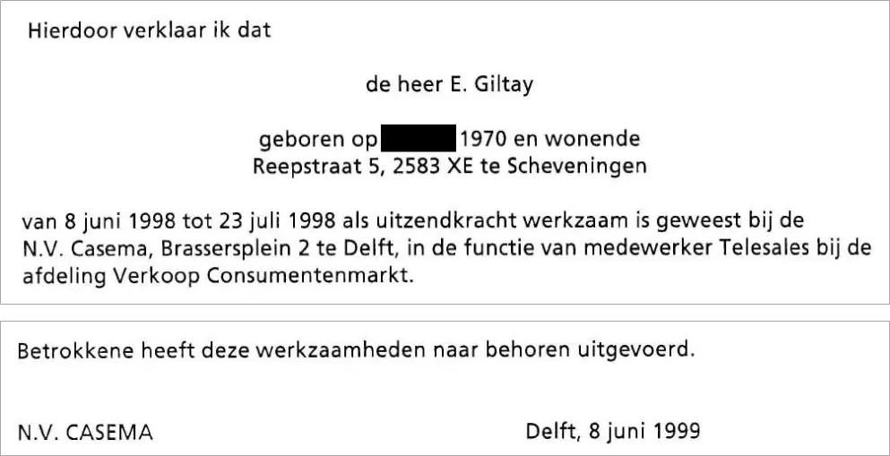

Beweisstück · Zeugnis
Zeugnis von Casema für Giltay, 8. Juni 1999
Die Passage
„Hiermit bestätige ich, dass Herr E. Giltay, geboren am […] 1970 und wohnhaft Reepstraat 5, 2583 XE Scheveningen, vom 8. Juni 1998 bis zum 23. Juli 1998 als Zeitarbeitskraft bei der N.V. Casema, Brassersplein 2 in Delft, in der Funktion eines Mitarbeiters Telesales in der Abteilung Verkauf Konsumentenmarkt tätig war. […] Der Betreffende hat diese Arbeiten ordnungsgemäß ausgeführt.“ Seite 1, der erste Satz und die Schlusszeile des Zeugnisses. Ausgelassen ist die Aufzählung der Telesales-Aufgaben zwischen diesem Satz und der Schlusszeile; mit „diese Arbeiten“ sind diese Aufgaben gemeint. Tag und Monat der Geburt sind im PDF geschwärzt. Aus dem Niederländischen übersetzt; der Originaltext steht unten.
Originaltext
“Hierdoor verklaar ik dat de heer E. Giltay geboren op […] 1970 en wonende Reepstraat 5, 2583 XE te Scheveningen van 8 juni 1998 tot 23 juli 1998 als uitzendkracht werkzaam is geweest bij de N.V. Casema, Brassersplein 2 te Delft, in de functie van medewerker Telesales bij de afdeling Verkoop Consumentenmarkt. […] Betrokkene heeft deze werkzaamheden naar behoren uitgevoerd.”

Warum dieses Dokument wichtig ist
In diesem Zeugnis vom 8. Juni 1999 bestätigt das Kabel- und Internetunternehmen Casema, dass Giltay vom 8. Juni bis zum 23. Juli 1998 als Zeitarbeitskraft eingesetzt war, als Mitarbeiter Telesales, und schließt mit dem Satz: „Der Betreffende hat diese Arbeiten ordnungsgemäß ausgeführt.“ Der Essay stellt solche Empfehlungen der Unternehmen, bei denen Giltay gearbeitet hatte, der Charakterisierung gegenüber, die der Verteidigungsminister 1999 über ihn festhielt und nie zurückzog und die bis heute online im Bericht 1999/507 des Nationalen Ombudsmanns steht. Darin heißt es, Giltay sei bei Casema wegen „lästigen und unangepassten Verhaltens“ entlassen worden. Das Unternehmen selbst beschreibt diese Wochen ganz anders als der Minister.
Herkunft
- Dokument
- Zeugnis
- Absender
- N.V. Casema, Brassersplein 2, Delft
- Ausgestellt für
- E. Giltay
- Unterzeichnet
- G.M. Doedée, Vizepräsident Human Resources
- Ort
- Delft
- Datum
- 8. Juni 1999
- Zeitraum
- 8. Juni bis 23. Juli 1998, als Zeitarbeitskraft
- Funktion
- Mitarbeiter Telesales, Abteilung Verkauf Konsumentenmarkt
- Betreff
- Verrichtete Tätigkeiten und die Art ihrer Ausführung
- Geschwärzt
- Die Unterschrift sowie Tag und Monat der Geburt sind im Scan geschwärzt
- Sprache
- Niederländisch
- Seiten
- 1
- Aufbewahrt bei
- Archiv des Autors
- Siehe auch
- Bericht 1999/507 des Nationalen Ombudsmanns, 17. Dezember 1999
Zitiert in:
- dem Essay „Das Verbot fiel, das Buch hielt stand“ im Kapitel (3) „Was das Buch enthüllt: die Srebrenica-Vertuschung“
- dem Stimmenabschnitt.
Dokument: https://
Zuletzt geändert am 19. September 2026, abgerufen am 4. Oktober 2026.

Diese Seite ist ein Beweisstück zum Buch Der Cover-up-General von Edwin Giltay und zur dazugehörigen Website.